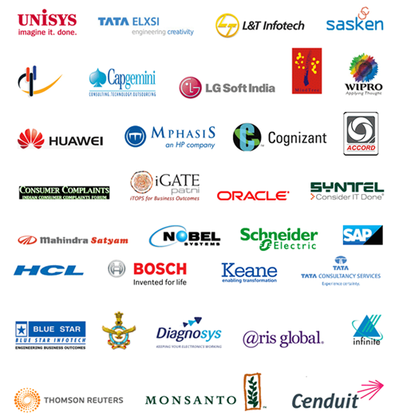

About College
Atria Institute of Technology (AIT) is one of the most prestigious institutes in Bangalore providing state-of-the-art professional education in various streams of Engineering and Management. It offers programs at the undergraduate, postgraduate and doctorate levels. Admission is done on the basis of state-level entrance exams like KCET or COMEDK UGET entrance exams. About 90% of the students have been placed through campus recruitment and 50 companies were involved in campus recruitment drive last year.
Vision
To be a premier technical and management institution providing the best in class learning solutions for developing competent professionals.
Mission
Atria Institute of Technology is committed to:
Create the right ambiance to attract the best human resources.
Collaborate with leading institutions and industry.
Students with teaching, learning engagements, and research.
B.E
Computer Science & Engineering
Information Science & Engineering
Electronics & Communication Engineering
Mechanical Engineering
Civil Engineering
M.TECH
Computer Science & Engineering
Digital Electronics and Engineering
Computer Networks & Engineering
MBA
Core HR
Core Marketing
Core Finance
Placements
At Atria, we have placement as an integral part of the education process of a student. Placement preparation & readiness starts soon after admissions - for each student, identifying the basic skills and improvement areas, conducting foundation, add-on, and advantage courses, monitoring the progress and enhancing the readiness to face the placement season with confidence, is an interdisciplinary activity with oversight by the Academic Head and the Placement Head of the institution.